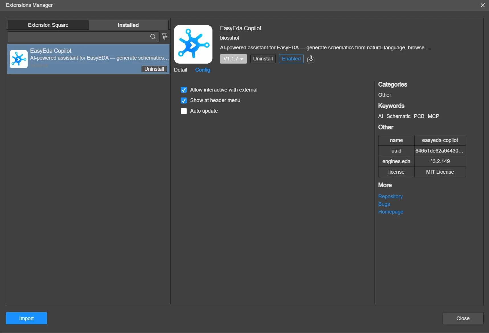

Get started
Use EasyEDA Pro Desktop, Node.js 20.19 or newer, and an MCP-capable client such as Codex or Claude Code.
Install the extension
Download the latest .eext package. In EasyEDA Pro Desktop, open Settings → Extensions → Extensions Manager, choose Import Extensions, and enable External Interactions for EasyEDA Copilot.

Connect an MCP client
Add the server using the command for your client, then start the client with the server enabled. The extension discovers the local bridge automatically. In EasyEDA, Copilot → MCP pauses or resumes the connection.
Other MCP clients and local builds ↗Codex
codex mcp add easyeda-copilot -- npx -y easyeda-copilot-mcpClaude Code
claude mcp add easyeda-copilot -- npx -y easyeda-copilot-mcpInspect a project
Open a schematic or PCB in EasyEDA Pro. Ask your agent to inspect the current project, identify the active document, and report the design rules before proposing edits.
Find an editable example →